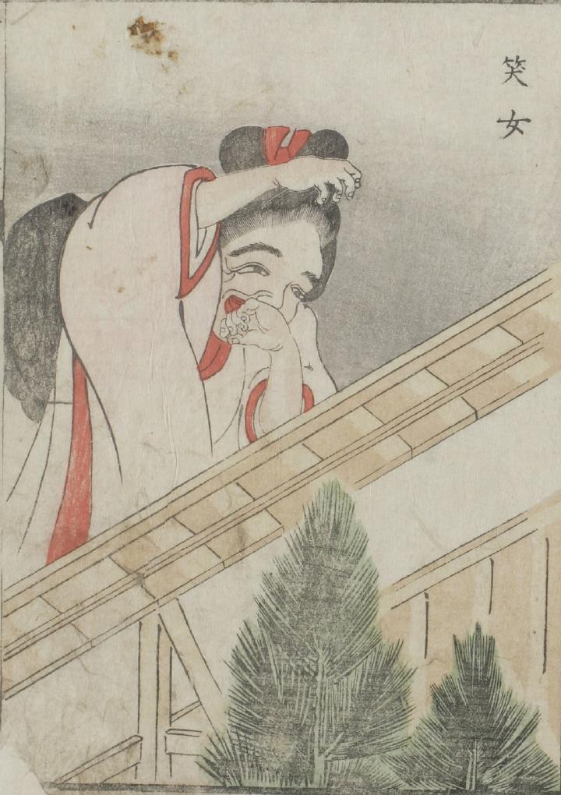

大女；オオオンナ，笑い；わらい

笑女が口元を手で隠し笑っている。その背丈は塀を越えるくらいに大きい。
出典：親書誌：U426_nichibunken_0051：怪物画本；カイブツエホン／日付：2006／資源識別子：U426_nichibunken_0051_0007_0000
Copyright (c)2010- International Research Center for Japanese Studies, Kyoto, Japan. All rights reserved.